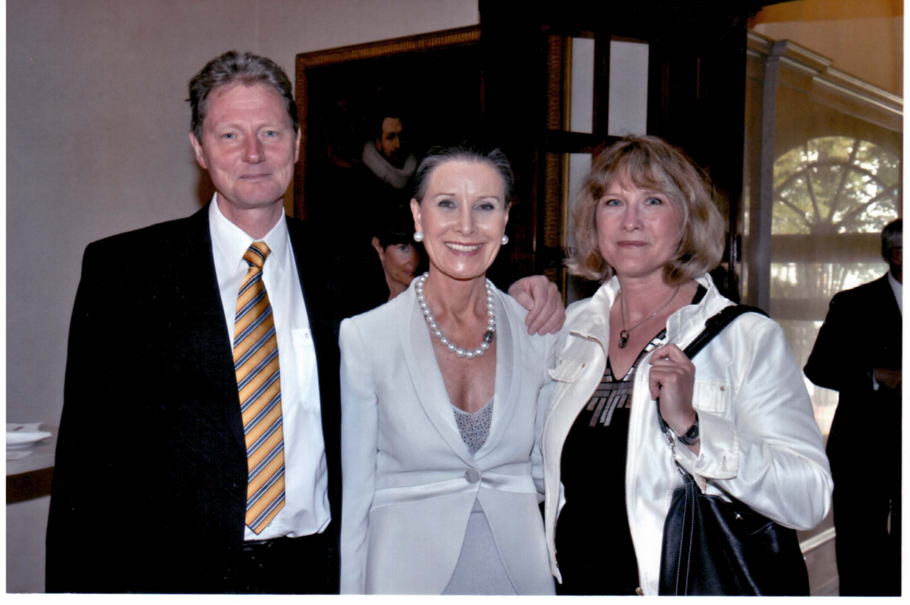

Manche Menschen nehmen einen Raum sofort für sich ein. Sie erzählen, gestikulieren und sorgen dafür, dass jeder weiß, wer sie sind. Maren Otto ist das genaue Gegenteil.
Sie ist Hanseatin. Das merkte man vom ersten Augenblick an. Freundlich, höflich und korrekt, aber zunächst ausgesprochen reserviert. Sie gehörte nicht zu den Menschen, die ihr Gegenüber sofort umarmten oder nach wenigen Minuten zum vertraulichen „Du“ übergingen. Sie hörte lieber zu, als selbst zu reden. Erst wenn sie sich ein Bild gemacht hatte, stellte sie ihre Fragen. Klare Fragen. Präzise Fragen. Man hatte sofort den Eindruck, dass sie jedes Wort aufmerksam aufnahm und erst sprach, wenn sie sich eine Meinung gebildet hatte. Vertrauen musste man sich bei ihr verdienen.
Vielleicht verstanden wir uns gerade deshalb so gut. Auch ich gehöre nicht zu den Menschen, die lange um den heißen Brei herumreden. Wir sprachen über Ideen, Möglichkeiten und Probleme. Wenn etwas sinnvoll war, wurde es gemacht. Wenn nicht, dann eben nicht. Das war eine Art der Zusammenarbeit, die uns beiden lag.
Unser erstes längeres Gespräch führten wir bei einer Benefizveranstaltung im Jüdischen Museum in Berlin. Ich erzählte ihr von meiner Vorstellung einer Kinderklinik, die sich grundlegend von den üblichen Krankenhäusern unterscheiden sollte. Mich hatte immer gestört, dass Kinder ein Krankenhaus fast ausschließlich mit etwas Negativem verbanden: Schmerzen, Spritzen, Operationen und Angst. Ich wollte dieses Bild verändern. Die Kinderklinik sollte sich nicht um Krankenzimmer gruppieren, sondern um einen großen Freizeitbereich mit Theater, Musikstudio, Werkstatt, Kochstudio und Spielmöglichkeiten. Sie hörte aufmerksam zu und stellte am Ende nur eine einzige Frage:
„Was kostet so etwas?“
„Etwa zehn Millionen Euro“, antwortete ich.
Mehr nicht. Ich hatte ihr lediglich eine Größenordnung genannt. Am nächsten Morgen, gegen zehn Uhr, klingelte mein Telefon. „Herr Professor Schweigerer“, sagte sie, „ich habe heute Morgen mit meinem Finanzberater Thomas Armbrust gesprochen. Wir werden Ihre Kinderklinik finanzieren.“
Ich war sprachlos. Andere Menschen hätten Gutachten eingeholt, Berater befragt oder monatelang gerechnet. Maren dachte eine Nacht darüber nach und traf dann eine Entscheidung. Diese Entschlusskraft beeindruckte mich tief.
In den folgenden Monaten lernte ich sie immer besser kennen. Einmal in der Woche kam sie nach Berlin-Buch. Dann saßen wir gemeinsam mit Architekten, Erzieherinnen, Pflegekräften, Physiotherapeuten und Mitarbeitern unseres Fördervereins über den Plänen der neuen Kinderklinik. Maren war dabei nicht die großzügige Spenderin, die gelegentlich vorbeischaute. Sie arbeitete mit. Sie hatte Architektur studiert, und das merkte man. Immer wieder nahm sie einen Bleistift in die Hand und veränderte Grundrisse. Während ich über medizinische Abläufe sprach, fragte sie, wo die Kinder spielen würden, wo Eltern mit ihren Kindern zur Ruhe kommen könnten oder wie man einen Raum heller und freundlicher gestalten könne. Große Freiflächen waren ihr wichtig. Manchmal schien sie die Baukosten völlig auszublenden. Sie dachte eben nicht wie ein Krankenhausmanager, sondern wie eine Architektin.
Je länger wir zusammenarbeiteten, desto deutlicher wurde mir, dass Maren Geld nie als Selbstzweck betrachtet hatte. Sie gab nicht einfach Geld. Sie übernahm Verantwortung. Wenn sie ein Projekt unterstützte, wollte sie wissen, was daraus wurde. Sie stellte Fragen, hörte aufmerksam zu und mischte sich ein, wenn sie glaubte, dass etwas besser gemacht werden konnte. Das machte die Zusammenarbeit manchmal anspruchsvoll, aber immer spannend.
Was sie überhaupt nicht ertragen konnte, war mangelnder Stil. Für Maren gehörten Respekt, Verlässlichkeit und Höflichkeit selbstverständlich zusammen. Als Francesco de Meo später entschied, die Maren-Otto-Kinderklinik nicht zu bauen, war sie natürlich enttäuscht. Noch mehr störte sie jedoch die Art, wie diese Entscheidung zustande gekommen war. Ich rief Jörg Reschke an und schilderte ihm ihre Reaktion.
„Sie hätte wenigstens erwartet, dass man ihr schreibt“, sagte ich. „Ein Projekt dieser Größenordnung beendet man nicht mit einem Telefonat.“
Wenige Tage später erhielt sie tatsächlich einen Brief, unterschrieben von Francesco de Meo. Zu spät. Maren hatte ihre Entscheidung längst getroffen. Mit Helios wollte sie nichts mehr zu tun haben. Sie wurde weder laut noch persönlich. Sie zog einfach einen Schlussstrich. Das entsprach ihrem Wesen.

Unsere Zusammenarbeit endete deshalb jedoch keineswegs. Von Anfang an hatten wir neben der Kinderklinik noch ein zweites gemeinsames Projekt verfolgt: ein Elternhaus für Familien schwer kranker Kinder.
„Dann bauen wir eben zuerst das Elternhaus.“
Mehr sagte sie nicht. Das war typisch Maren. Keine langen Diskussionen, keine Vorwürfe, kein Blick zurück. Sie richtete ihren Blick sofort auf das nächste Ziel.
Im Laufe der Jahre wurde aus unserer Zusammenarbeit eine Freundschaft. Hinter der zunächst kühl wirkenden Hanseatin verbarg sich ein warmherziger, humorvoller und ungemein loyaler Mensch. Wer ihr Vertrauen einmal gewonnen hatte, durfte sich glücklich schätzen. Ich jedenfalls hatte dieses Glück.